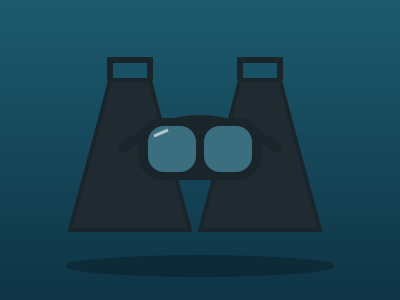
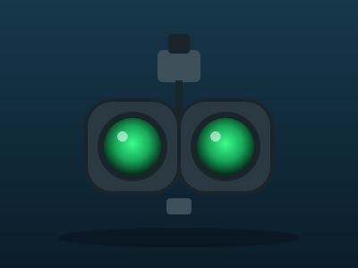

Спорядження
Про спорядження
Спорядження бойового плавця складається з трьох груп: дихання (ребризер), навігація і пересування (дошка з компасом, ласти, буксирувальник) та бачення в темряві (ПНВ і ліхтарі з червоним світлом).
Усі ілюстрації намальовані спеціально для цього сайту у форматі SVG і не відтворюють конкретні моделі. Як обрати прилад нічного бачення — на сторінці «Поради».
Галерея спорядження
-

Кисневий ребризер. Замкнутий цикл: без бульбашок, до кількох годин під водою. -

Навігаційна дошка. Компас, глибиномір і таймер в одному корпусі. -

Буксирувальник (DPV). Тягне плавця під водою, береже сили на довгій дистанції. -

Маска і ласти. Маска малого об'єму та довгі ласти для економного плавання. -

Тактичний ліхтар. Червоне світло не руйнує нічний зір. -

Панорамний ПНВ. Чотири труби, поле зору близько 97°. -

Бінокулярний ПНВ. Два ока — краще відчуття глибини. -

Монокуляр ПНВ. Легкий і доступніший варіант.
Ребризер чи акваланг
| Параметр | Акваланг (відкритий цикл) | Кисневий ребризер |
|---|---|---|
| Бульбашки | Так, помітні | Майже немає |
| Шум | Чутно | Тихо |
| Тривалість | До 1 год | Кілька годин |
| Глибина | Велика | Лише мала |
| Складність | Проста | Потрібна спецпідготовка |